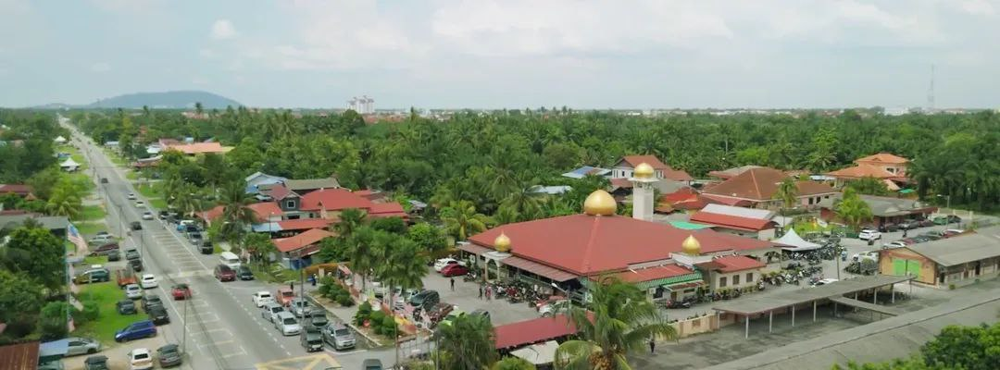

Isnin · 14 Disember 2026
Hafazan dan pembinaan jiwa
Masjid Kampung Sungai Lang Baru, Banting.
Pendaftaran, taklimat, teknik hafazan pantas, mula Surah Al-Mulk, slot akhlak, muraja’ah dan tasmik kumpulan kecil.
Masjid Kampung Sungai Lang Baru, Banting
“Membina Jiwa, Mengungguli Akhlak dengan Kalamullah.”
Program harian, tidak bermalam. Untuk remaja 10 tahun ke atas yang lancar membaca Al-Quran.

Masjid Kampung Sungai Lang BaruKiraan detik program
Menunggu tarikh program…
Pendaftaran ditutup
Tarikh tutup akan dipaparkan.
Baki slot
Peserta menghafaz surah pilihan, membina adab dan kepimpinan, kemudian menyempurnakan tasmik dalam lawatan sambil belajar ke Shah Alam.
Isnin · 14 Disember 2026
Masjid Kampung Sungai Lang Baru, Banting.
Pendaftaran, taklimat, teknik hafazan pantas, mula Surah Al-Mulk, slot akhlak, muraja’ah dan tasmik kumpulan kecil.
Selasa · 15 Disember 2026
Masjid Kampung Sungai Lang Baru, Banting.
Hafazan Surah As-Sajdah, Al-Insan dan permulaan Al-Kahfi mengikut kemampuan, slot kepimpinan remaja, tasmik percubaan dan taklimat Hari 3.
Rabu · 16 Disember 2026
Yayasan Restu, Muzium Sultan Alam Shah, Masjid Negeri Shah Alam.
Lawatan sambil belajar, solat Zohor berjemaah, makan tengah hari dan tasmik kemuncak di sekitar masjid dan tasik.
Sasaran hafazan
Pembahagian surah ialah cadangan dan boleh diubah oleh ustaz mengikut kemampuan peserta.
Pengisian utama
Jadual ini berdasarkan Modul Program. Waktu solat ialah anggaran untuk Selangor dan perlu disemak dengan jadual rasmi JAKIM/JAIS.
| Masa | Aktiviti |
|---|---|
| 8:00–8:30 pg | Pendaftaran peserta, pengagihan tag dan modul |
| 8:30–9:00 pg | Perasmian, taklimat program, bacaan doa dan ta’aruf |
| 9:00–10:30 pg | Teknik Hafazan Pantas (sesi 1): pengenalan teknik; mula Surah Al-Mulk |
| 10:30–11:00 pg | Minum pagi dan rehat |
| 11:00 pg–12:30 tgh | Hafazan Surah Al-Mulk (sesi 2) secara berkumpulan |
| 12:30–2:00 ptg | Solat Zohor, makan tengah hari dan rehat |
| 2:00–3:30 ptg | Slot Motivasi Pembinaan Jiwa: Adab dan Akhlak |
| 3:30–4:00 ptg | Minum petang |
| 4:00–4:30 ptg | Muraja’ah dan tasmik kumpulan kecil |
| 4:30–5:00 ptg | Solat Asar, refleksi hari pertama, doa dan bersurai |
| Masa | Aktiviti |
|---|---|
| 8:00–8:30 pg | Kehadiran, bacaan doa dan muraja’ah Surah Al-Mulk |
| 8:30–10:00 pg | Teknik Hafazan Pantas (sesi 3): Surah As-Sajdah |
| 10:00–10:30 pg | Minum pagi dan rehat |
| 10:30 pg–12:30 tgh | Hafazan Surah Al-Insan dan permulaan Surah Al-Kahfi (mengikut kemampuan) |
| 12:30–2:00 ptg | Solat Zohor, makan tengah hari dan rehat |
| 2:00–3:30 ptg | Slot Motivasi Pembinaan Jiwa: Kepimpinan Remaja |
| 3:30–4:00 ptg | Minum petang |
| 4:00–4:30 ptg | Tasmik percubaan dan muraja’ah untuk persediaan kemuncak |
| 4:30–5:00 ptg | Solat Asar, taklimat Hari 3 (pakaian, bekalan, peraturan bas), doa dan bersurai |
| Masa | Aktiviti |
|---|---|
| 7:30–8:00 pg | Berkumpul di masjid, kehadiran dan doa permusafiran |
| 8:00 pg | Bertolak ke Shah Alam (zikir dan muraja’ah dalam bas) |
| 9:30–11:00 pg | Tiba terus ke Yayasan Restu: lawatan galeri dan penerangan |
| 11:15 pg–12:30 tgh | Muzium Sultan Alam Shah (tiket RM2–RM5 seorang; sila sahkan) |
| 12:30–1:00 tgh | Masjid Negeri Shah Alam: tiba, bersiap dan berwuduk |
| 1:00–2:00 ptg | Solat Zohor berjemaah |
| 2:00–2:45 ptg | Makan tengah hari |
| 2:45–4:00 ptg | KEMUNCAK: tasmik hafazan / bacaan surah yang dihafaz sejak Hari 1 dan 2 di sekitar tasik dan Masjid Negeri |
| 4:00–4:15 ptg | Refleksi, penyampaian sijil dan doa penutup |
| 4:15 ptg | Bertolak pulang ke Banting; dijangka tiba kira-kira 5:30 petang |
Destinasi 1
Kompleks Taman Seni Islam Antarabangsa, No. 2A Pesiaran Damai, Seksyen 10, 40100 Shah Alam. Bersebelahan Masjid Negeri dan Taman Tasik Shah Alam.
Pusat seni Islam yang dikaitkan dengan penyalinan, pencetakan dan penghiasan mashaf Al-Quran. Yuran kumpulan akan disahkan dengan pihak Yayasan.
Destinasi 2
Persiaran Bandaraya, Seksyen 14, 40000 Shah Alam · +60 3-5519 0050 · Selasa–Ahad, 9:30 pagi–5:30 petang (tutup Isnin).
Galeri Sejarah, Adat & Kebudayaan, dan Alam Semula Jadi. Kadar tiket kumpulan akan disahkan dengan muzium.
Destinasi 3
Masjid Sultan Salahuddin Abdul Aziz Shah. Solat Zohor, makan tengah hari dan tasmik kemuncak di sekitar masjid dan tasik.
Kebenaran penggunaan kawasan akan dimaklumkan kepada pejabat masjid lebih awal.
Isi maklumat di bawah. Selepas hantar, anda akan menerima nombor rujukan, jumlah yuran dan arahan bayaran. Slot terhad kepada 40 peserta.
Tidak. KSQ 2026 ialah program harian, 8:00 pagi hingga 5:00 petang. Peserta pulang ke rumah setiap hari kecuali perjalanan Hari 3 yang dijangka tiba kira-kira 5:30 petang.
Remaja berumur 10 tahun ke atas dan lancar membaca Al-Quran. Kapasiti terhad kepada 40 peserta. Umur minimum/maksimum boleh disemak dengan urus setia.
Al-Quran, alat tulis, botol air, pakaian sopan dan kasut yang selesa. Bawa kad kebenaran ibu bapa (Hari 3) dan ubat peribadi jika perlu.
Selepas borang dihantar, skrin kejayaan akan memaparkan arahan bayaran terkini. Hantar bukti melalui WhatsApp urus setia. Slot disahkan selepas bayaran disemak.
Semua peserta menunaikan solat Zohor berjemaah di Masjid Negeri Shah Alam. Jadual waktu ialah anggaran dan bergantung kepada keadaan trafik.
Sila hubungi urus setia masjid untuk pertanyaan lanjut.